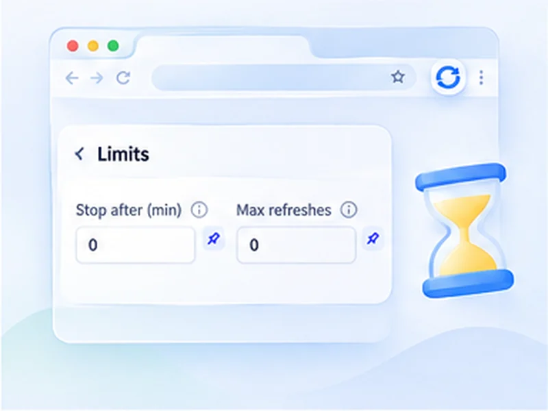

It knows when to stop.
Set a time limit, a refresh limit, or both. When either is reached, refreshing ends and the counter tells you why.

How refresh limits works
Set a time limit, a refresh limit, or both. When either is reached, refreshing ends and the counter tells you why.
Limits live under Advanced settings. Click the pin next to either one to keep it on the popup's main view.
Quick setup
Open Advanced settings, Limits.
Type minutes into Stop after, or a number into Max refreshes.
Press Start. Leave both at 0 to run without a limit.
Auto refresh for a set time, then stop
An auto refresh left running overnight is easy to forget. Limits make it end by itself. Set Stop after in minutes and refreshing finishes when the time is up, with the popup showing the time left as it goes.
Refresh a set number of times
Max refreshes caps the count instead. After that many reloads the run ends and the popup tells you the limit was reached. Use both together and whichever comes first wins.
A polite cap
A count limit keeps you from sending thousands of requests to a site by accident.
A natural end
A time limit suits events with a known length, such as a sale, a match or a working day.
Limits, watch rules and manual stop
A run ends in one of four ways: you press Stop, a time limit passes, a count limit is reached, or a watch rule matches. The on-page counter and the popup always say which one it was.
A worked example: a two-hour sale
A flash sale runs from 6 to 8 pm. At 6, set a 30 to 60 second random refresh on the product page, type 120 into Stop after, and press Start. The popup shows Time left counting down from 2h 00m. At 8 the run ends, the counter reads Time's up, and nothing is left reloading overnight.
Choosing between a time limit and a count limit
Use a time limit when
the event has a clock: a sale, a match, a shift, a booking window.
Use a count limit when
you want to bound the number of requests, for example no more than 200 checks of someone else's site.
Use both when
you want whichever comes first, as a safety net.
Common mistakes
- Leaving both at 0 on a long watch. That means no limit at all.
- Expecting pause to stop the clock. The end time is fixed when you press Start.
- A count limit that is too small. At 30 seconds, 100 refreshes lasts only 50 minutes.
At a glance
- Stop after N minutes. Run for the length of a sale, a shift or a meeting, then finish.
- Stop after N refreshes. Cap the number of reloads to stay polite to a website.
- Combine them. Whichever limit comes first ends the run.
Questions, answered.
How do I make auto refresh stop automatically?
Set Stop after (minutes) or Max refreshes under Advanced settings, Limits.
What does 0 mean?
No limit. With both at 0 it runs until you stop it.
Can I see how long is left?
Yes. The popup shows Time left when a time limit is set.
Does pausing extend the time limit?
No. The time limit is a fixed end time from when you pressed Start.
Can I keep limits on the main popup view?
Yes. Click the pin next to either setting in Advanced.
What happens when a limit is reached?
Refreshing stops and the popup shows which limit ended it. Press Start again to run another round.
Try it on your next open tab.
Free for Chrome and Firefox, with no account required.
Not seeing the feature you need?
Share the browser task you would like to make easier. Your idea helps guide what gets built next.